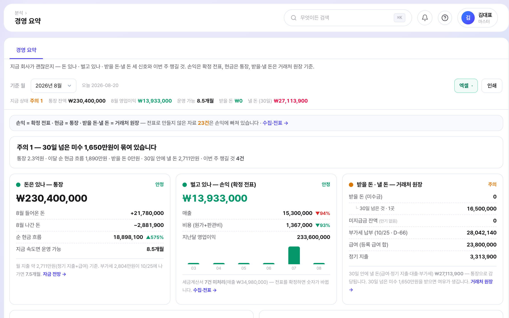
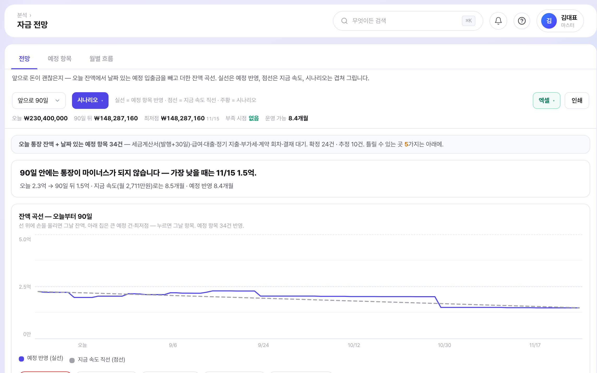

서비스 소개서 · 2026년 9월
운영사 (주)모티브이노베이션
흩어진 자료를 모아 전표 초안까지
지금 괜찮은지, 앞으로 괜찮을지
대표가 먼저 볼 것만 골라서
발송이나 이체는 저절로 실행되지 않습니다.
수집·전표 — 예시 화면(가상 회사)


경영 요약 · 자금 전망 — 예시 화면(가상 회사)
대시보드 · 지원사업추천 — 예시 화면(가상 회사, 판정 결과는 예시)